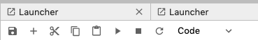

Data science and machine learning in chemical engineering
Table of Contents
This class is about data, models and data analysis in chemical engineering. We will cover topics including
- Reading data from different sources (urls, files, etc)
- Visualization of data
- Working with multidimensional data
- Using Pandas
- Using scikit-learn for machine learning
The class will utilize Python and Jupyter notebooks. I am going to assume you have some basic fluency in Python, and Jupyter notebooks, e.g. you have at least taken 06-623 (Mathematical modeling of chemical engineering processes). If you have not had that course, you will want to review the lectures at https://github.com/jkitchin/f19-06623.
1 Getting started
We will be using Jupyter notebooks for most lectures and assignments. We will try to run these through the Jupyter lab environment.
You will typically need to download some class files from Canvas, and put them in a convenient place. I recommend you make a class folder in a convenient place for you.
You should open a shell, navigate to the location of your class files, and then run jupyter lab in the shell.
Your commands will look something like this:
cd /path/to/your/class-files jupyter lab
1.1 Windows
If you find your class directory in Windows Explorer, and you have git bash installed, you should be able to right click in the folder, and select git bash. It should open in that folder, and then you can just type jupyter lab in the shell.
If you get an error like:
Exception: Jupyter command 'jupyter-lab' not found. then you need to run:
pip install jupyterlab in your shell.
1.2 Mac
Open a Terminal, navigate to your class folder, and then run jupyter lab.
1.3 Linux
Open a shell/terminal, navigate to your class folder, and then run jupyter lab.
1.4 Jupyter resources
Jupyter cheat sheet: https://medium.com/edureka/jupyter-notebook-cheat-sheet-88f60d1aca7
2 Getting started with Jupyter Lab
On the left side is a panel that should show a navigation panel. You can double click on a notebook here to open it. This is probably the best way to access notebooks. They will open in a tab on the right.
- You can shrink the navigation bar by clicking on the folder icon next to the left of the + symbol.
Let's look at this notebook. It is made of cells. If you click on one you will see a blue bar indicating the scope of the cell. If you double click on a cell, you can see how it was made. It is written in Markdown, a lightweight text markup language. Type C-enter (Control and enter at the same time) to render the cell.
Double click on the cell again. Now type S-enter (shift-enter) to render the cell and move to the next cell.
When on a cell that is rendered, you can use the up and down arrows to move from cell to cell.
With your cursor on this cell, type Esc-b and then Enter. This will create a new cell after the cell, and enter it so you can add something. The default mode for a cell is code. This is a code cell. Type print('Hi there') and press C-enter to execute it. You should see some printed output.
Select your code cell by clicking on it. Now press Esc then a. That will insert a cell above the selected cell. Remember, by default this will be a code cell. We are going to change this to a Markdown cell. You can see it is a code cell at the top in the icons. The one that says "Code" tells you it is a code cell.

Next, press m. You should see the cell type change to Markdown. Note you can use this menu with your mouse to change the cell type.

Now press Enter to go into the cell, or double click in it. Type some regular text and press C-enter to render it.
Let's review some simple markup:
# heading ## subheading **bold** *italics* Separate text by blank lines so they appear as "paragraphs" [a link](https://github.com) 1. a 2. numbered list 1. you can also have sub-items - a bullet list - with sub-bullets
You will be using both code and Markdown cells to document what you are doing, why you are doing it, and what it means.
Jupyter notebooks are a way to communicate your work. The are also executable documents. Some important points to remember:
- The code is for a computer, and it represents your attempt to convert some idea in your head into an executable program.
- You cannot expect others to read your mind and guess what your intentions were. You have to use the narrative text in the Markdown cells to explain what you are trying to do, what approximations you have to make to accomplish it.
Let's see a real example of this. Don't worry about what this code means yet, it is an idea I want to get across.
What is happening here?
import numpy as np x = np.linspace(0, np.pi) y = np.sin(x) 0.5* ((x[1:] - x[:-1]) * (y[1:] + y[:-1])).sum()
1.9993148493240622
It is hard to tell. I know (for now) what is in my head, but even future me will have trouble figuring out what this means.
Compare that to:
I want to compute the integral \(y = \int_0^\pi sin(x) dx\). I will approximate the integral using the trapezoid rule, and vectorize it as described at https://berkeley-stat159-f17.github.io/stat159-f17/lectures/09-intro-numpy/trapezoid..html
import numpy as np x = np.linspace(0, np.pi) y = np.sin(x) 0.5* ( (x[1:] - x[:-1]) * (y[1:] + y[:-1])).sum()
1.9993148493240622
Next we compare the method to the np.trapz library function.
np.trapz(y, x)
1.9993148493240622
This is one of the most critical points in data science. The data itself is not meaningful if you don't know what it was obtained for, and your analysis may not be useful if nobody can tell what you were trying to do. It is critical that you provide documentation to guide people reviewing your work (including future you).
3 Break
Please get up, stretch, etc. We will be back in two minutes.
4 Data
We will start with some high level thinking about what we mean by data, why we get it, and what we do with it.
Data are things we measure, assume to be facts, and that we use to learn about the process the data was collected from. It is usually a set of numerical values that are collected. It is critical to know something about your data so you understand what analysis may be appropriate. Data is a plural word. Datum is the singular form of data.
For example, here are two sets of data on my weight:
- [7.5, 46, 150, 157]
- [156, 155, 158, 157]
We are missing some context on these. The first set is data over four decades, while the second set is over four days. It doesn't really make sense to average the first set, whereas the average of the second set gives you a good idea of how my weight fluctuates on a daily basis.
Data by itself is not helpful. It is analysis of data that is helpful, but you have to know what the data is supposed to represent to know if the analysis is helpful.
There are many kinds of analysis one can do: statistical, regression, integration, etc. Each of these has the purpose of extracting information from the data.
Let's consider the average and standard deviation of the second weights above. To perform this analysis, we need a computational tool, we will use Python. We will extensively use numpy arrays for data analysis. We start by making an array in a variable called weights. Then, we simply call the mean and std functions of that array inside a formatted string.
import numpy as np weights = np.array([156, 155, 158, 157]) print(f'My average weight is {np.mean(weights)} \pm {np.std(weights):1.1f} lbs.')
My average weight is 156.5 ± 1.1 lbs.
This analysis makes sense if we think my weight fluctuates about some average with a normal distribution of fluctuations. We do not have enough data to determine if it is normal here, but it is worth noting that assumption underlies the analysis. Note, we also assume that each measurement is independent, and uncorrelated with the previous and next measurement. If I weigh myself only once a day, that is probably reasonable. If these are sequential weights separated by 1 minute, then either something is wrong with the scale or, I am doing something funny in how I weigh myself.
What factors could affect the weight measurement?
- What am I wearing?
- What and when did I last eat/drink?
- When was the last time I exercised and for how long?
- Are all the measurements from the same scale?
The answers for all these constitute the metadata, which is data about the data. If we had access to this metadata, we might ask if any of these factors influence the measurements. As we consider more dimensions like this, it becomes inconvenient to visualize and build models with conventional tools, and we then will turn to machine learning.
There is a lot to learn about using data before we get to machine learning though.
5 Breakout rooms
Let's take a break here from the lecture and try the breakout rooms. I am going to assign you all randomly to breakout rooms shortly.
Take a minute to introduce your selves to each other, and say why you are interested in this class, and what you hope to get out of it. Nominate one of yourselves to be the person who will report back in about 8 minutes with a summary of the discussion. Send the name of that person to me in chat. When we reconvene, I will call on those people to report to everyone what the outcomes were. Each room will have a google doc shared with it. Please use it to take notes on your discussion.
6 Reference material
- https://jupyterlab.readthedocs.io/en/stable/user/interface.html
- There is a lot here that some of you may find interesting.
- Keyboard shortcuts

- You do not need to memorize these, but they will eventually help you do some things faster
- https://docs.scipy.org/doc/numpy/reference/routines.statistics.html
- Familiarize yourself with what is possible. Do not try to memorize all these. The main point is be familiar so that you can better judge in the future if there is likely to be a library function you can use, or if you need to implement a function yourself.
7 Reading material
Please start reading at https://jakevdp.github.io/PythonDataScienceHandbook/02.02-the-basics-of-numpy-arrays.html and read through Chapter 2 to the end https://jakevdp.github.io/PythonDataScienceHandbook/02.09-structured-data-numpy.html. We will cover some of this material next week. Note that you can open these in "Colab" from the web site to work on the examples interactively.
Colab is a Google product that is like a Jupyter notebook. We will not be able to use Colab for some exercises in the class, but for the Data Science Handbook it is fine to use it.